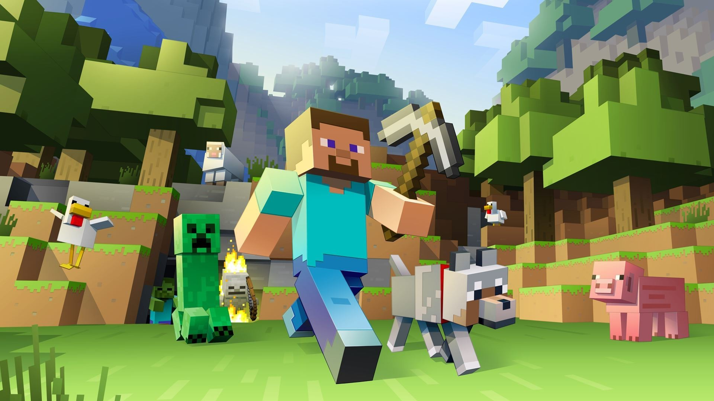

Why Minecraft Is More Than Just a Game
October 7, 2026 by Netanya Haughton

Minecraft is one of the most creative games available today. Although the world is made up of simple blocks, players can transform those blocks into almost anything they can imagine. From small houses and farms to large cities and castles, the game gives players the freedom to create their own unique worlds and experiences. The possibilities within Minecraft allow players to experiment with different ideas and express their creativity in many different ways. Players can design buildings, create farms, explore different environments and work on projects that can become increasingly complex as they learn more about the game. This freedom to create makes every Minecraft world feel different and gives players many reasons to continue playing and developing their worlds.
Another reason Minecraft is so enjoyable is that there is no single correct way to play. Some players enjoy building, while others prefer exploring caves, fighting monsters or surviving with limited resources. This freedom allows every player to have a different experience and is one of the reasons Minecraft continues to be popular with people around the world.